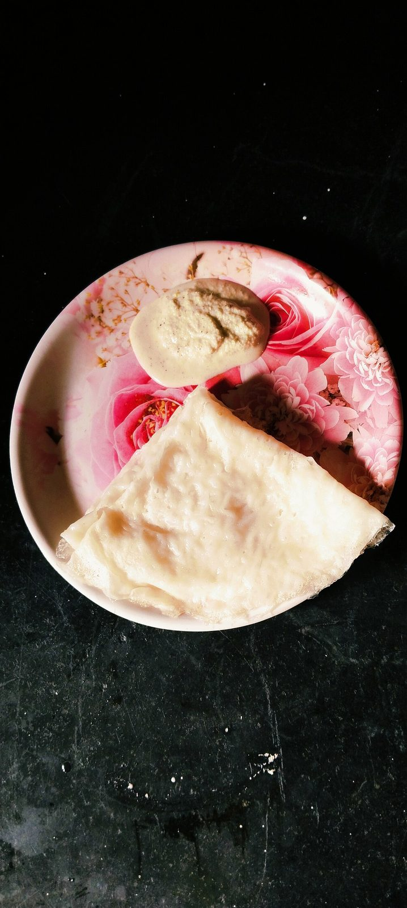

Start the day before. The soaking alone is 5 hr, against 40 min of actual work.
Allergens: none of the ten listed below
Checked against the ingredient list for ten allergens: milk, egg, fish, crustaceans, tree nuts, peanuts, sesame, mustard, soy and gluten. Brands vary, so read the label on anything new to you.
Ingredients
Quantities for 4.
- 1 cup raw rice Ricesona masoori or any short-grain raw rice
- 4 tbsp, fresh grated Coconut
- 3 tbsp, for the tawa Coconut Oil
- about 700ml in total Water
- 3/4 tsp Salt
Cookware
stovetop, tawa, blender
Before you start
- Soak the rice 5 hours or overnight. Neer dosa has no fermentation and no leavening, so the soak is what makes the batter grind fine.
- Neer means water: the finished batter should be as thin as full-fat milk and run straight off the ladle in a stream.
- Season a cast iron tawa properly beforehand. On a poorly seasoned pan these tear every time.
Method
- Drain the soaked rice and grind it with the grated coconut and 250ml water to a completely smooth batter, 4 to 5 minutes in the blender.Rub a drop between your fingers. Any grittiness at all means it needs another two minutes.
- Pour into a bowl, stir in the salt and thin with the remaining water until it is the consistency of thin milk.This will feel far too thin. It is meant to. A pourable-but-thick batter gives you a chapati, not a neer dosa.
- Heat the tawa over medium-high until a drop of water skitters across it, then wipe it with a coconut-oil-dipped cloth.
- Stir the batter well, then pour a ladleful from a height onto the hot tawa, moving in a spiral from the outside in. Do not spread it with the ladle.Filling gaps with extra batter is the instinct to resist; a hole or two is the mark of a proper neer dosa.
- Cover and cook 60 to 90 seconds until the surface loses its wet sheen and the edges lift on their own.
- Do not flip. Fold the dosa in half and then in half again with a spatula and slide it onto a plate.
- Wipe the tawa with the oiled cloth between each dosa and stir the batter every time, since the rice settles fast.Stir before every single ladle. The batter separates within a minute.
- Serve warm with coconut chutney, a jaggery-coconut filling, or a coastal fish curry.
Storage
Best eaten within a couple of hours, stacked and covered with a cloth so they stay pliable. The batter keeps 2 days refrigerated; whisk and re-thin with water before using.
Nutrition Good estimate
Low protein: 4 g a serving, 5% of the calories
| Per serving75 g | Per 100 g | |
|---|---|---|
| Calories | 320 kcal | 426 kcal |
| Protein | 3.7 g | 5 g |
| Carbohydrate | 40.9 g | 54 g |
| of which sugars | 0.9 g | 1 g |
| Fibre | 1.4 g | 2 g |
| Fat | 15.4 g | 20 g |
| of which saturated | 12.9 g | 17 g |
| of which unsaturated | 1.2 g | 2 g |
Estimated from raw ingredients using USDA FoodData Central.
Times, yields, allergens and nutrition are guidance. Use your own judgement on doneness and on storing. More in About.